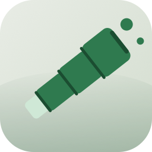

Vigie
Pronounced vee-zhee — French for the lookout in a ship's crow's nest.
Vigie is a native macOS app that watches GitHub repositories for what your team is doing — commits, pull requests, reviews and comments — for a chosen set of people or everyone, with desktop notifications. No local clone required.
Download for Mac
checking for a release…
Requirements
- macOS 13 or later, Apple silicon
- A GitHub account (device-flow sign-in, no token to paste)
Updates
Vigie checks this site quietly on launch and lets you install a new version when one is found — never without asking first.